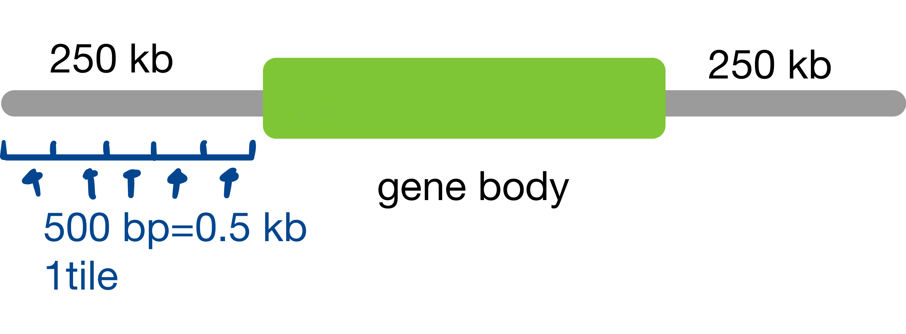

Association studies between ATAC-seq and eQTL
Basic concepts
Check overview-multiome.qmd.
ATAC-seq:
Assay for Transposase-Accessible Chromatin using sequencing.
Maps open regions of chromatin across the genome to study gene regulation.
Data type: …
eQTL:
Expression Quantitative Trait Locus.
A position in the genome where genetic variation is statistically associated with differences in gene expression levels (typically mRNA abundance) across individuals.
Data type: …
Paper 1:
Background
“Genetic variants can affect complex traits through changes in gene expression levels that are mediated by the effect of variants on transcription factor (TF) binding at gene regulatory elements, leading to differences in chromatin accessibility.
Improved understanding of the mechanisms involved in chromatin accessibility, revealed by genetic variants that modulate chromatin accessibility (i.e. caQTLs), has the potential to illuminate the molecular mechanisms and genetic regulatory architecture of complex traits.”
Results
Inferred genotypes support high-powered caQTL mapping across samples
“To ensure that caQTL mapping results were not being significantly impacted by certain sample characteristics, such as cell/tissue type or whether samples were cancer-derived, we separately perform caQTL mapping in various subsets of samples to address these concerns.”
“We performed caQTL mapping separately in cancer-drived samples (n=312) and non-cancer samples (n=1132) and cound that ~93% of the caQTL peaks found in cancer samples analysis and ~67% of the caQTL peaks found in the non-cancer samples analysis were found in the global analysis.”
“We assessed the impact of sample cell/tissue type in two different ways.
First, we chose two groups of samples that were well represented in our datawet based on our annotations and groupings, T cells (n=210) and brain (n=178).
We found that ~39% of the caQTL peaks found in the brain samples and ~65% of the caQTL peaks found in the T cell samples were found in the global analysis.
Additionally, we perform caQTL mapping with all samples by including a cell type covariate based on annotated cell/tissue type identity and found that ~87% of caQTL peaks were rediscovered by including cell type as a covariate.”
Colocolization suggests shared causality between chromatin accessibility, complex traits and expression QTLs
“Colocolization analysis discerns if an association signal is likely shared between two traits, suggestive of a common underlying genetic mechanism.
First, we examined which caQTL signals are shared with GWAS signals across a variety of complex human traits. We obtained GWAS summary statistics from a subset of the UK Biobank (UKBB) study, selecting 78 traits of interest with high confidence of significant heritability. We then performed colocalization analysis for any caQTL peak that was located within 1 Mb of a genome-wide significant lead GWAS signal. ”
…
Methodology Summary
As summarized by Perplexity, this paper is more like a large-scale caQTL mapping from ATAC-seq alone:
- The paper’s distinctive feature is inferring genotypes directly from aggregated public ATAC-seq, then doing joint peak calling and cis-caQTL mapping to find variants that modulate chromatin accessibility, all without matched RNA-seq.
- The method used in this paper is conceptually closet to standard caQTL studies that: (1) obtain genotypes, (2) call ATAC-seq peaks, and (3) associate SNP dosage with peak accessibility, as in human brain caQTL analyses, even though those usually use independent genotyping rather than calling variants from ATAC itself.
It differs from integrative eQTL-ATAC methods in the sense that:
Integrative QTL methods like PLOS Genetics “Integrative QTL analysis of gene expression chromatin accessibility” perform joint eQTL and caQTL mapping and formal mediation tests (genotype -> chromatin -> expression), assuming matched RNA-seq and ATAC-seq in the same samples.
By contrast, this paper focuses on building a robust ATAC-only pipeline (genotype inference, donor deconvolution, joint peak calling, caQTL discovery) and only then relating caQTL results to external resources (e.g. eQTL and GWAS) through enrichment or colocalization, not sample-level joint modeling.
Paper 2：
This paper uses integrative QTL and mediation analysis in Collaborative Cross (CC) mice to link genetic variants, chromatin accessibility (ATAC-seq), and gene expression (RNA-seq) across liver, lung, and kidney, identifying how regulatory variants act locally and distally, and when chromatin or other genes mediate these effects.
Results
…
Mediation analysis framework
- Because expression and accessibility were measured in the same mice, they applied mediation models to test whether chromatin accessibility mediates local-eATL, and whether expression of nearby genes mediates distal-eQTL.
Biological conclusions and implications
- The study shows that many strong QTL for molecular traits are Mendelian-like with large effect sizes, and that integrative QTL plus mediation can recover plausible causal chains genotype -> chromatin -> expression, including multi-tissue patterns.
Methodology Summary
This is a standard overall strategy in the sense that it maps cis-eQTLs from RNA-seq and cis-caQTLS FROM ATAC-seq in the same (or closely matched) individuals, tissues, and conditions.
Then, it compares the two QTL sets to see whether a single variant appears to drive both chromatin accessibility and expression of a nearby gene.
Mediation analysis is then used to test whether the caQTL effect statistically mediates the eQTL effect, i.e. whether genotype -> accessibility -> expression fits the data better than independent effects.
Paper 3:
Colocalization
Paper 4: SCARlink (probably a benchmark)
With GitHub Repo here and notebooks to generate the figures at the same Repo.
In general
SCARlink is a statistical model that predicts gene expression (Y) from chromatin accessibility data (X) at the single-cell level.
Chromatin accessibility = whether DNA is “open” enough for genes to be read
Gene expression = how much a gene is actually being transcribed into RNA
Statistical approach
Regularized Poisson regression:
Why? Gene expression counts follow a count (Poisson) distribution.
Input X: chromatin accessibility (scATAC-seq) across 500bp “tiles” spanning \(\pm\) 250kb
500 bp tiles: genome are divided into non-overlapping chunks that are each 500 base pairs long.
bp = base pairs (the A,T, G, C letters of DNA)
tile: a fixed-width segment of the genome,
\(\pm\) 250kb window:
kb = kilobases = 1,000 base pairs
250kb = 250,000 base pairs
\(\pm\) 250kb = 250kb upstream (before) & 250kb downstream (after) the gene
Total window: ~500kb wide + gene body itself
To put together:
- Take the gene body (varies in length, could be 10kb, 100kb, etc.);
- Add 250kb upstream of gene start;
- Add 250kb downstream of gene start;
- Divide this entire region into 500 bp tiles.

Display: 500 bp “tiles” spanning +- 250 kb around each gene Each tile gets a count of how many chromatin accessibility “reads” fall within it.
Output (Y): single-cell gene expression counts (scATAC-seq)
Regularization: L2 penalty (ridge regression) to prevent overfitting.
Constraint: non-negative coefficients (only learning positive regulatory effects)
Used regularized Poisson regression with loss function (?)
$$
\frac{1}{n} \sum_{i=1}^n (e^{X_i \mathbf{w} + \epsilon} - Y_i(X_i \mathbf{w} + \epsilon)) + \alpha \| \mathbf{w}\|_2^2,
$$
- Here, $n$ corresponds to the number of cells, $X$ correspons to the min-max scaled accessibility matrix, $\mathbf{y}$ corresponds to the gene expression vector, $\mathbf{w}$ is the learned regression coefficient vector and $\alpha$ is the regularization parameter.
- Left out 1/4 of the data for testing.Paper 5: A paper on causal discovery - gene regulatory network inference
Abstract
Gene regulatory network inference (GRNI) aims to discover how genes causally regulate each other from gene expression data.
a problem of causal discovery.
identify causal regulatory relationships from observational and experimental data.
Latent confounders, such as non-coding RNAs, may induce spurious dependencies.
Dependencies may also result from selection - only cells satisfying certain survival or inclusion criteria are observed - while these selection-induced spurious dependencies are frequently overlooked in gene expression data analyses.
- “Selection bias” = “collider bias” in the context of the paper.
The authors show that such selection is ubiquitous and, when ignored or conflated with true regulations, can lead to flawed causal interpretation and misguided intervention recommendations.
A fundamental question: can we distinguish dependencies due to regulation, confounding, and selection?
- Answer: Selection-induced dependencies are symmetric under gene perturbation, while those from regulation or confounding are not.
Proposed GISL (Gene regulatory network Inference in the presence of Selection bias and Latent confounders)
- Leverages perturbation data to uncover both true gene regulatory relations and non-regulatory mechanisms of selection and confounding up to the equivalence class.
Methodology
Selection bias arises when only samples satisfying underlying criteria are systematrically induced - excluding all others - and thereby induces spurious dependencies.
(1) inherent constraints (‘survival’), which arise prior to treatment and are always operative, and
(2) sampling bias, which results from non-randomly sampling.
…..
Summarized by Google Scholar Lab
To study the association and causality between eQTL and ATAC-seq peaks (often identified as chromatin accessibility QTLs or caQTLs), researchers employ several integrated statistical and computational approaches:
1. Colocalization Analysis
Maserrat, Shahin, and Murray J Cairns. “A review of post-GWAS studies in schizophrenia.” Translational psychiatry vol. 15,1 456. 31 Oct. 2025, doi:10.1038/s41398-025-03656-1
Mu, Zepeng, et al. “Impact of Disease-Associated Chromatin Accessibility QTLs across Immune Cell Types and Contexts.” Cell Genomics, https://doi.org/10.1016/j.xgen.2025.101061.
To determine if an eQTL and a caQTL signal at a specific locus share the same underlying causal variant.
Bayesian methods: COLOC and eCAVIAR calculate the posterior probability that a single variant affects both chromatin accessibility and gene expression.
Significance: Successful colocalization provides strong evidence that the genetic variants’ effect on gene expression is mediated through changes in chromatin accessibility:
- genetic variant —> chromatin accessibiity (via ATAC-seq) —> gene expression (via eQTL)
What could be confounders and colliders along in this path?
Colliders: selection, i.e., only cells satisfying certain survival or inclusion criteria are observed.
Confounders: …
2. Mendelian Randomization (MR)
Davey Smith, George, and Gibran Hemani. “Mendelian randomization: genetic anchors for causal inference in epidemiological studies.” Human molecular genetics vol. 23,R1 (2014): R89-98. doi:10.1093/hmg/ddu328
Kumasaka, Natsuhiko et al. “High-resolution genetic mapping of putative causal interactions between regions of open chromatin.” Nature genetics vol. 51,1 (2019): 128-137. doi:10.1038/s41588-018-0278-6
MR is used to infer the causal direction between molecular traits by using genetic variants as “instruments”.
Directionality: It can test if a change in chromatin accessibility (exposure) causes a change in gene expression (outcome)
- chromatin accessibility -> gene expression
Advanced frameworks: methods like MR-link or multi-instrument MR are used to account for linkage disequilibrium (LD) and pleiotropy, which can otherwise confound causal inferences.
3. Mediation Analysis
When raw data for both ATAC-seq and RNA-seq are available for the same individuals, mediation analysis can distinguish between different models:
Forward model: genetic variant -> chromatin accessibility -> gene expression
Reactive model: changes in gene expression subsequently lead to changes in chromatin accessibility, i.e., gene expression -> chromatin accessibility
4. Fine-Mapping and Enrichment
Functional enrichment: researchers often overlay fine-mapped eQTL credible sets with ATAC-seq peaks to identify “causal” variants that lie within open chromatin regions.
Motif analysis: investigating if eQTL-caQTL colocalized variants disrupt known transcription factor (TF) binding motifs can provide a mechanistic explanation for the observed association.